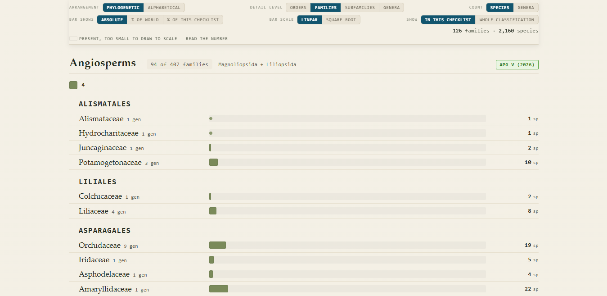

Phylogenetic Checklist Viewer
See a plant checklist arranged by evolutionary relationship instead of by the alphabet.

What it does
You give the viewer a checklist. It shows the families in the order of the current phylogenetic classifications, so related families sit next to each other:
- flowering plants follow APG V (2026);
- ferns and lycophytes follow PPG I (2016);
- gymnosperms follow Yang et al. (2022);
- bryophytes follow BPG (Li et al. 2024).
The viewer recognises 706 current and 1,323 former family names of extant plants. On top of that arrangement, it:
- shows which families are present in your checklist and, when you ask, which are absent;
- shows each family’s share of your checklist and its share of the world’s species, using species counts from the Catalogue of Life;
- lets you change the level of detail: orders, families, subfamilies or genera. Subfamilies are shown when your file has a
subfamilycolumn; the only ones built in are for the fern and lycophyte genera of the demonstration checklist; - compares two or more checklists with three similarity indices, Jaccard, Sørensen and Simpson, and groups them in a tree (UPGMA by default; nearest-neighbour and furthest-neighbour linkage are offered for comparison);
- gives a richness index, taxa per 1,000 km², when you type each area into the comparison table or load an areas file: a CSV with a label column holding the checklist name and an area column in km²;
- replaces a former family name, such as Chenopodiaceae (now Amaranthaceae), with the current one and reports every change it makes;
- finds the family from the genus when your file has no family column, using a Catalogue of Life list of about 17,000 genera.
Sampling and size of area
Similarity and richness depend on how well each area has been surveyed and on relative size. An under-collected area will look less similar to everything else.
The richness index allows for area, but richness does not rise in proportion to area, so comparisons between regions that differ greatly in size — Balochistan is 383 times the area of Islamabad Capital Territory — or in collecting intensity should be read with caution.
Only compare lists that cover the same groups of organisms.
What it does not do
It does not validate your names. The viewer uses names exactly as you give them. It cannot tell whether a name is misspelled, out of date or a synonym. Check your names first with a name-matching service:
- TNRS, the Taxonomic Name Resolution Service, for plants;
- ChecklistBank, run by the Catalogue of Life and GBIF.
It also does not explain why a family is rare or missing. A low share can mean that an area is under-collected, or that the family truly does not grow there. That judgement belongs to the specialist.
What your file needs
A CSV file (comma-separated values). In Excel, choose File, then Save As, then CSV UTF-8. The first row holds the column names.
Your file needs a column for the lowest rank you are interested in, and may include columns for higher ranks up to family. Genus is taken from the species name and family from the genus, so one of these columns is enough:
family: the family name;genus: the genus name;speciesBinomialorscientificName: the full two-word species name, such as Stipa capillata, not the second word alone.
Optional columns:
speciesorcount: the number of species in each row, when a row stands for more than one species (for example, a family total). If yourspeciescolumn holds names instead of numbers, the viewer notices and reads them as names;subfamily: the subfamily of the genus on that row (the row also needs a genus or a species name). Tribe columns are not read;global: your own figure for the number of species a family has worldwide. It replaces the Catalogue of Life figure.
A small example:
family,genus,speciesBinomial
Poaceae,Stipa,Stipa capillata
Asteraceae,Artemisia,Artemisia absinthium
Amaranthaceae,Chenopodium,Chenopodium albumYour first result in three steps
- Open the viewer. It starts with a demonstration checklist, so you can try every button before you use your own data.
- Press “Load a CSV” and choose your file. The chart redraws with your checklist. Press “Download placement report” to see every name that was renamed or could not be placed.
- Change the view. Set “Show” to “Whole classification” to see the absent families too. Set “Bar shows” to “% of world” to compare your checklist with world diversity.
Tip: click the title at the top of the viewer to replace it with your own. Your title is printed on exported figures.
Downloads
Every figure and table can be downloaded: the ordered checklist and the placement report as CSV, the chart as PNG or SVG, the comparison results as CSV and PNG, and the whole page as PDF.
Get the viewer
To link to the viewer from a paper or a web page, use tools/viewer.html. That link always opens the newest version.